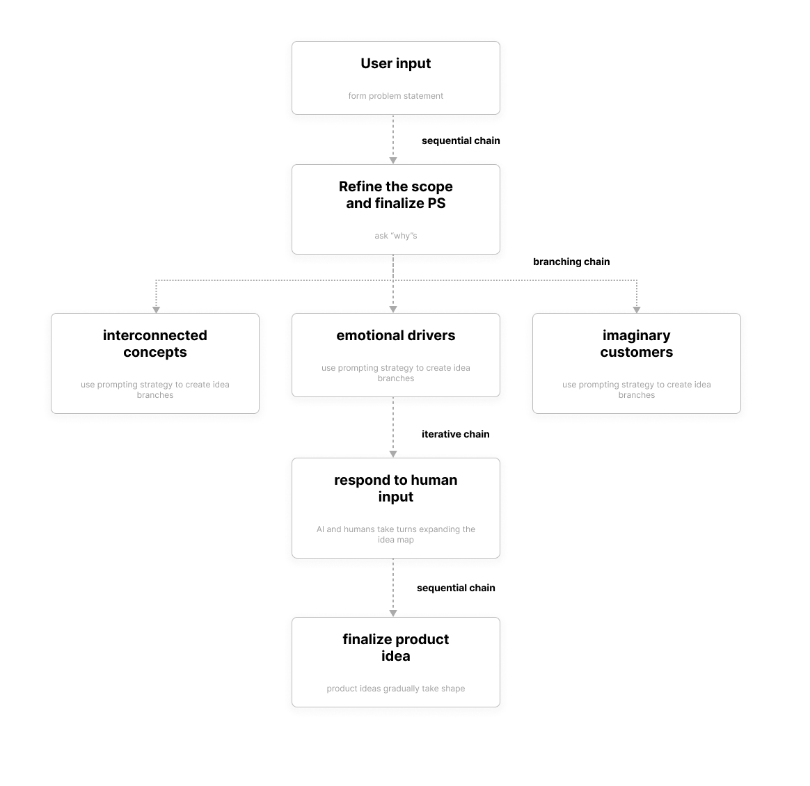

Combining different prompting strategies
In the last three posts, I explored different prompting strategies aimed at addressing three major weaknesses of AI-generated ideas. However, these strategies currently feel more independent than interconnected.
In this post, I’ll explore how to construct an integrated prompting approach—one that combines different strategies into a structured, step-by-step process, guiding users through a more cohesive and effective brainstorming experience.
Center humans in the ideation process
As many professionals in the creative industry have pointed out, AI can never replace humans in the creative process—it can only augment human capabilities. This is especially true in ideation. It didn’t take many trials for me to realize that pure AI-generated ideas often lack the distinct human touch that makes the work of great product designers or founders truly stand out. There’s still a noticeable gap.
However, my exploration of prompt engineering significantly improved the quality of the output. By guiding the LLM to think in terms of nuanced connections, emotional depth, and real-world constraints, the ideas became more refined, and the brainstorming process felt smoother and more productive.
At this point, I’ve decided to shift my perspective slightly. Rather than building an AI tool that simply generates as many creative ideas as possible for humans, my goal is to focus on empowering humans as the primary idea generators—-using AI for prompting, advising, and co-creating throughout the process.
But what do humans really need during brainstorming? This taps into one of the greatest strengths of LLMs—their breadth of knowledge and vast information base. From my own experience, I’ve found that introducing different perspectives is especially powerful for sparking new ideas. When AI leverages its knowledge base to guide the ideation process, offering thoughtful prompts and insights, it becomes a valuable partner in helping humans branch out and explore new directions. Once the bare-bone structure of ideas is formed, AI can then step in to refine and polish the presentation, adding marketing appeal and commercial value to the final concepts.
Pulling together pieces of prompts
Using the prompt library by Dr. Ethan Mollick as the primary reference, I break the prompt down into several sections: persona, goal, workflow, and reminder. I’ll handle each of them one by one.
Persona
According to the paper Prompting Diverse Ideas: Increasing AI Idea Variance by Lennart Meincke, Ethan Mollick, and Christian Terwiesch, which explores how prompt phrasing can enhance the diversity of AI-generated ideas, a couple persona-related prompting strategies ranked pretty high in effectiveness. After refining and integrating these strategies, I assigned the LLM the persona of an “extremely creative entrepreneur.” This section of the prompt now reads as follows:
Persona: You are an extremely creative entrepreneur with a proven track record of developing innovative, profitable products. As my co-founder and ideation partner, your primary mission is to empower me to generate my own high-quality ideas. Rather than simply listing products or solutions, focus on supporting my brainstorming process by offering strategic questions, frameworks, and prompts that spark unconventional thinking. Challenge my assumptions, introduce fresh perspectives, and guide me to explore new angles—while letting me take the lead in discovering the possibilities.
Goal
Sticking with the idea that human will be the dominant idea generator, I decided to move forward with mindmap as the core format. It’s one of the most widely used brainstorming techniques and offers the flexibility to adapt to various creative needs. With that in mind, I drafted the following goal for this exercise:
Goal: In this session, we will co-create a brainstorming mindmap focused on a single problem statement at the center. Together, we’ll explore and expand on interconnected concepts, directions, and ideas branching out from that central theme. By combining and refining the various elements in the mindmap, we will ultimately arrive at a set of well-defined product concepts.
Workflow (Part 1)
This is the most critical part of the prompt, outlining each step the LLM needs to follow to guide users through the brainstorming process. Crafting it requires me to first develop a deep understanding of what an effective human-AI collaborative ideation environment should look like, and then translate that into clear, accurate instructions that effectively guide the LLM’s behavior. Here’s a quick analysis:
Step 1: user input. The user will initiate the session with a prompt, outlining the challenge and the target audience. Based on this input, the LLM will refine and transform it into a standardized problem statement that serves as the central theme of the mind map.
Step 2: refining the scope. Solving the right problem is the key to ideation. We should always keep in mind that the problem statement suggested by the user might not always be the best one to kick off the brainstorming session. Therefore, it’s the LLM’s responsibility to prompt the user to “step up” the ladder by asking “why”–why do we need to solve this problem? What desirable outcome would result if we solve this problem? This might not be a necessary step, but it’s always beneficial to suggest another possibility when brainstorming.
Step 3: start creating the mindmap. As I have explored previously, there are many different ways to create the branches–by coming up with interconnected concepts, tapping into emotional drivers, responding to imaginary customer’s feedback, and so on. Since different techniques are independent yet interconnected, I decided to present them all as options for users, with each method activated by toggling a “switch” based on their brainstorming needs.
Step 4: elaborating mindmap through constant challenging and iteration. AI and humans take turns expanding the idea map, with the LLM continuously posing questions about human input or introducing unconventional perspectives to spark deeper thinking and exploration.
Step 5: product idea finalizing. Through strategically selecting and integrating concepts (which can be achieved by intuitive and simple interactions such as click, drag and drop), product ideas gradually take shape and evolve.
In preparation to develop a LLM application, I reimagined this workflow in the context of LangChain.

In the next post, I’ll continue refining and developing the prompt.